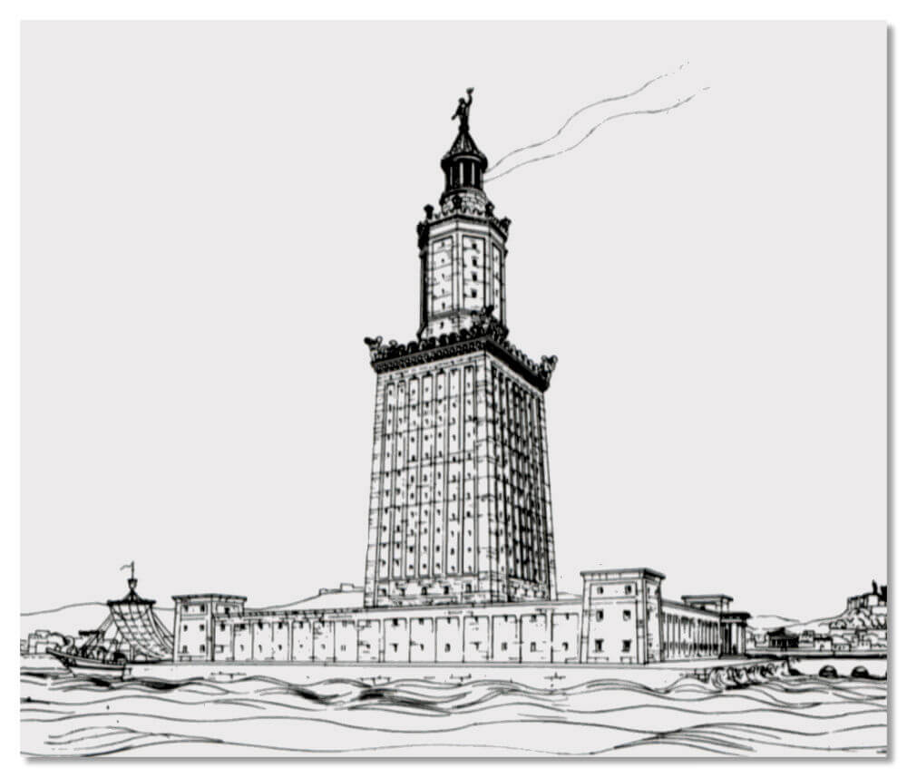
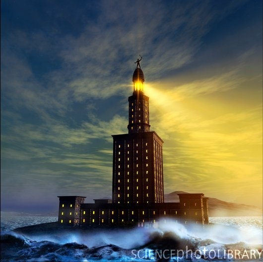
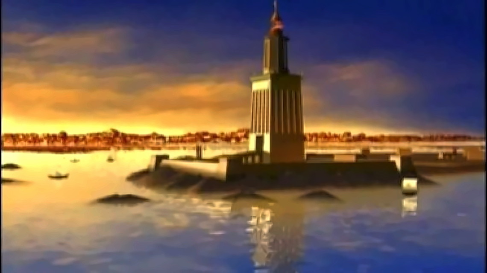
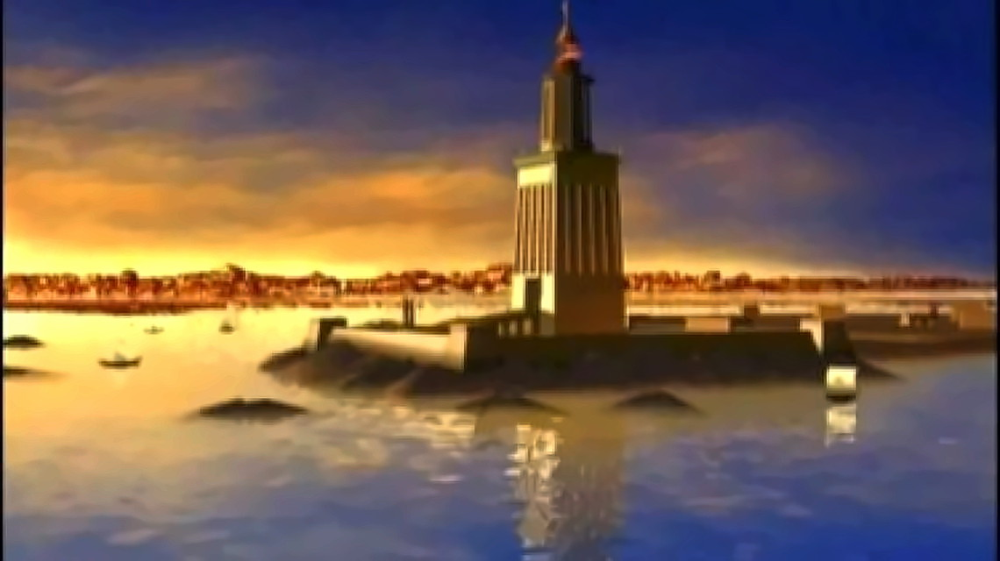

Dacă rolul de far pe care l-ar fi avut Colosul este controversat, în schimb printre cele șapte minuni antice găsim o asemenea construcție pe insula egipteană Faros, în fața orașului fondat de Alexandru în 331 î.e.n. și care îi poartă numele.
 
 

Construit în timpul domniei lui Ptolomeu II Filadelful (285-246 î.e.n.)
- protector al literelor și artelor, inițiatorul traducerii Bibliei în
grecește pentru faimoasa bibliotecă din Alexandria - Farul a durat
aproape un mileniu și jumătate. Cimentul pe care se află gravată
inscripția originală de pe soclul Farului, dedicată regelui, a cazut
cu vremea scotând la iveală o altă inscripție: Monumentul este
consacrat de arhitectul Sostrate din Cnid, fiul lui Dexiphan, zeilor
salvatori pentru cei ce călătoresc pe mare
. Cunoaștem deci și pe
constructorul Farului: Sostrate din Cnid (oraș carian de pe coasta
Asiei Mici, la sud de Halicarnas).